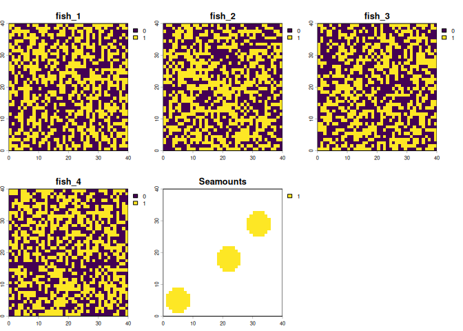
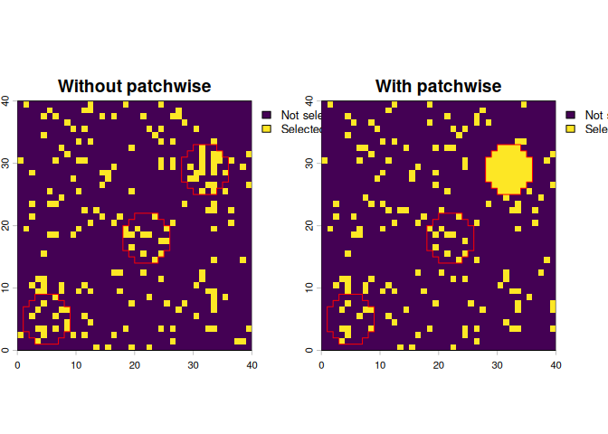
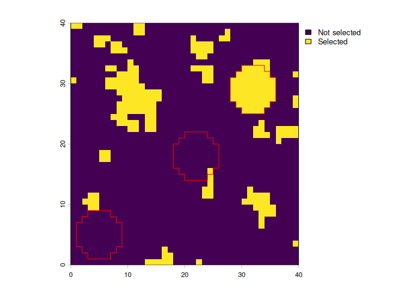
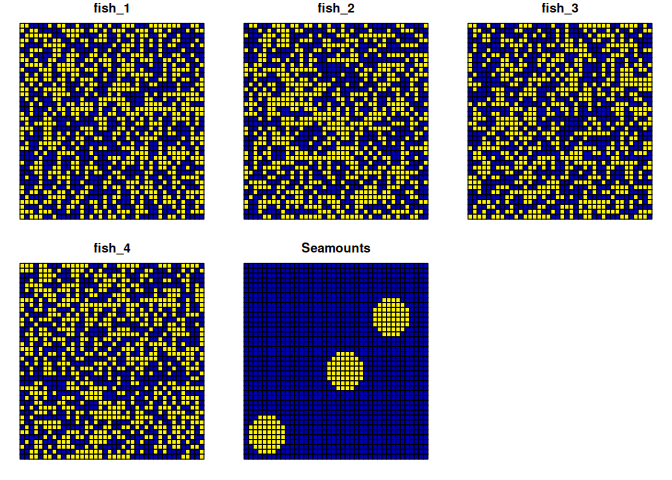
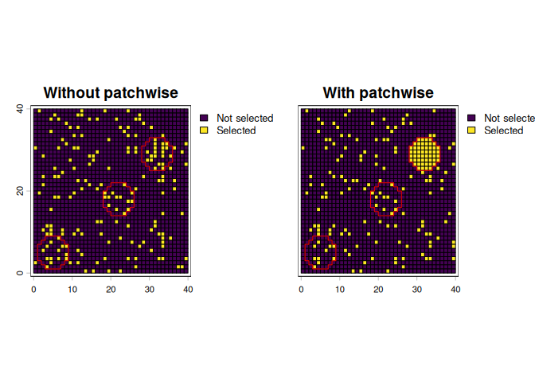

patchwise is intended to be used as a supplementary package to prioritizr for instances in which users wish to protect entire contiguous patches of features rather than portions of many features. For example, consider conservation planning for an area of ocean where seamounts are one of the biodiversity features that are targeted for protection. If the seamounts span multiple planning units and representation target of say 20% is used, portions of many seamounts could be protected, but it might be better to protect the entirety (contiguous patches) of a smaller number of seamounts. patchwise provides this option, ensuring that representation targets are met by representing whole features.
Installation
You can install the development version of patchwise from GitHub with:
# install.packages("pak")
pak::pak("emlab-ucsb/patchwise")Example using raster data
First load the libraries needed. Apart from patchwise, the terra package is used for raster data manipulation, and prioritizr is used for the spatial prioritization.
We will import some basic planning data to demonstrate how patchwise can be used. For this example we will use a a 40 x 40 raster planning grid which has a cost value of 1 for each cell, and the following features that will be targeted in the prioritization:
- 4 random, binary (0 or 1) data layers, representing species distributions; for this example we are calling them fish
- 3 “patches” of contiguous features; for this example we are calling them seamounts
#import planning units/ cost raster
pu_raster <- rast(system.file("extdata/pu_raster.tif", package = "patchwise"))
#import fish distributions
fish_distributions <- rast(system.file("extdata/spp_distributions.tif", package = "patchwise"))
#import seamounts
seamounts <- rast(system.file("extdata/seamounts.tif", package = "patchwise"))Let’s look at our fish distributions and our seamounts

Now we can use patchwise to do some pre-processing of the seamounts data so the seamounts can be prioritized as whole patches in the following prioritization.
# Create seamount patches
patches_rast <- create_patches(seamounts)
# Create patches dataframe - this creates constraints so that entire seamount patches are protected
patches_df_rast <- create_patch_df(spatial_grid = pu_raster, features = fish_distributions, patches = patches_rast, costs = pu_raster)
#> Processing patch 1 of 3
#> Processing patch 2 of 3
#> Processing patch 3 of 3With that pre-processing done, we can now use patchwise to create protection targets for our features, including seamounts. In this example, we will use 20%, including 20% of whole seamounts.
# Create targets for protection - 20% for each feature (including 20% of whole seamounts)
targets_rast <- features_targets(targets = rep(0.2, (nlyr(fish_distributions) + 1)), features = fish_distributions, pre_patches = seamounts)
# Add these targets to targets for protection for the "constraints" we introduced to protect entire seamount patches
constraints_rast <- constraints_targets(feature_targets = targets_rast, patch_df = patches_df_rast)With all the data preparation now done, we can run a prioritization using prioritizr:
The solution object is a tibble. To convert this into a raster object for plotting, we use the convert_solution() function from patchwise
# Convert the solution into a raster using the patchwise function `convert_solution()`
sol_rast_patches <- convert_solution(solution = solution_patches_tbl, patch_df = patches_df_rast, spatial_grid = pu_raster) |>
setNames("With patchwise")For comparison, we will run a prioritization without using patchwise
We can now plot the solutions, and overlaying the outlines of the seamounts (in red), we can see that one entire seamount is included in the solution that used patchwise, whereas the solution without patchwise selects a few planning units in each seamount. Note that in the solution with patchwise, planning units that overlap seamounts that are not entirely selected have also been selected to meet targets for other features (fish distributions).
plot(c(solution_no_patches, sol_rast_patches),
fun = function()lines(as.polygons(seamounts), col = "red"),
plg = list(legend = c("Not selected", "Selected")))
If you want to use a boundary penalty in the prioritization, we need to manually create a boundary matrix using the patchwise function create_boundary_matrix()
boundary_matrix_rast <- create_boundary_matrix(spatial_grid = pu_raster, patches = patches_rast, patch_df = patches_df_rast)We can now re-run the prioritization with a boundary penalty
We now get a solution with planning units more clustered together
plot(solution_rast_boundary, plg = list(legend = c("Not selected", "Selected")))
lines(as.polygons(seamounts), col = "red")
Example with sf data
The previous example used raster input data for the prioritization, but patchwise also handles sf data.
First we need to create suitable sf data inputs. We can do this by polygonizing the raster data:
#create the planning grid, which is also the same as the cost grid since we are using planning units all with cost = 1
pu_sf <- as.polygons(pu_raster, aggregate = FALSE) |>
st_as_sf()
features_sf <- as.polygons(fish_distributions, aggregate = FALSE) |>
st_as_sf()
seamounts_sf <- as.polygons(seamounts, aggregate = FALSE, na.rm = FALSE) |>
st_as_sf()
#replace NAs with zeroes
seamounts_sf[is.na(seamounts_sf$Seamounts), "Seamounts"] <- 0Let’s check our features and seamounts look ok:
plot(cbind(features_sf, st_drop_geometry(seamounts_sf)))
Now we can run the same patchwise functions as we did with raster data to prepare the data for prioritization
# Create seamount patches
patches_sf <- create_patches(seamounts_sf, spatial_grid = pu_sf)
# Create patches dataframe - this creates constraints so that entire seamount patches are protected
patches_df_sf <- create_patch_df(spatial_grid = pu_sf, features = features_sf, patches = patches_sf, costs = pu_sf)
#> Processing patch 1 of 3
#> Processing patch 2 of 3
#> Processing patch 3 of 3
# Create targets for protection - 20% for each feature (including 20% of whole seamounts)
targets_sf <- features_targets(targets = rep(0.2, ncol(features_sf)), features = features_sf, pre_patches = seamounts_sf)
# Add these targets to targets for protection for the "constraints" we introduced to protect entire seamount patches
constraints_sf <- constraints_targets(feature_targets = targets_sf, patch_df = patches_df_sf)With all the data preparation now done, we can run a prioritization using prioritizr:
The solution object is a tibble. To convert this into a raster object for plotting, we use the convert_solution() function from patchwise
# Convert the solution into an sf object using the patchwise function `convert_solution()`
solution_sf_patches <- convert_solution(solution = solution_patches_sf_tbl, patch_df = patches_df_sf, spatial_grid = pu_sf) For comparison, we will run a prioritization without using patchwise
We can now plot the solutions, and overlaying the outlines of the seamounts (in red), we can see that one entire seamount is included in the solution that used patchwise, whereas the solution without patchwise selects a few planning units in each seamount. Note that in the solution with patchwise, planning units that overlap seamounts that are not entirely selected have also been selected to meet targets for other features (fish distributions).
cbind(solution_no_patches_sf[,"solution_1"], st_drop_geometry(solution_sf_patches[, "protected"])) |>
setNames(c("Without patchwise", "With patchwise", "geometry")) |>
vect() |>
plot(1:2,
type = "interval",
plg = list(legend = c("Not selected", "Selected")),
fun = function()lines(as.polygons(seamounts, aggregate = TRUE), col = "red"))